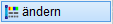

")
")
Ändern der Stiftnummer und/oder des Strichtyps einer Linie.
Stiftnummer ändern

Den Stiftnummern werden in den Systemdaten Farben zugeordnet. Es können bis zu 256 Stifte verwendet werden. Bildschirmfarbe und Ausgabefarbe können sich unterscheiden.
Bei der Ausgabe von Zeichnungen kann jeder Stiftnummer eine Strichstärke und Ausgabefarbe zugeordnet werden.
§Klicken Sie auf das Farbfeld, und wählen Sie die gewünschte Stiftnummer anhand ihrer Farbe aus.
Sie können die gewünschte Stiftnummer über die Ziffernleiste auch direkt auswählen. Mit den Pfeiltasten neben dem Farbfeld blättern Sie die Reihe der Ziffern um acht Positionen nach vorne oder nach hinten.
§Klicken Sie das zu ändernde Element an.
Das Element wird entsprechend der neuen Eigenschaften geändert.
Strichtyp ändern

Die Strichtypen werden in den Systemdaten definiert. Es können bis zu 30 Strichtypen definiert werden.
§Klicken Sie auf das Namen-Feld (z. B. GESTR1 - - - -), und wählen Sie aus der Liste aller definierten Strichtypen den gewünschten Typ aus.
Sie können den gewünschten Strichtyp über die Ziffernleiste auch direkt auswählen. Mit den Pfeiltasten neben dem Namen-Feld blättern Sie die Reihe der Ziffern um acht Positionen nach vorne oder nach hinten.
§Klicken Sie das zu ändernde Element an.
Das Element wird entsprechend der neuen Eigenschaften geändert.
Format mit "so wie" übertragen

Mit der so wie-Schaltfläche übernehmen Sie den Strichtyp und die Stiftnummer einer bestehenden Linie oder eines bestehenden Kreises und übertragen die Eigenschaften auf ein anderes Zeichenelement.
Siehe auch: so wie - Funktion
§Klicken Sie das Element an, dessen Eigenschaften Sie übernehmen möchten.
Die Eigenschaften des angeklickten Elements werden übernommen.
§Klicken Sie das zu ändernde Element an.
Das Element wird entsprechend der neuen Eigenschaften geändert.
|
Tipps: |
|
·Eine weitere Möglichkeit, eine Linie zu ändern, finden Sie über die Funktion [Konst 1 | ? | Ändern]. ·Sollen mehrere Linien geändert werden, verwenden Sie die Befehle aus [Konst 1 | FenÄnd → StLiKr bzw. → LtLiKr]. |

Zugehörige Referenzen: